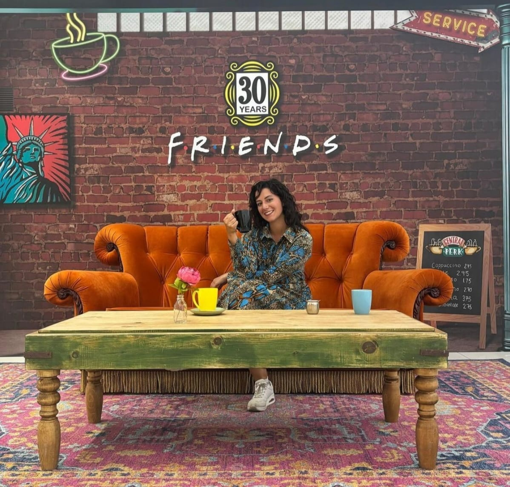

🌟 Documentalista Audiovisual & Gestora de Contenidos 🎬
Soy una apasionada del archivo multimedia y la gestión de contenidos audiovisuales, con experiencia en Antena3. Mi trabajo consiste en conservar, organizar y gestionar materiales audiovisuales de manera eficiente y creativa.
Descargar CV Breve descripción del proyecto o logro.
Breve descripción del proyecto o logro.
Antena 3
feb. 2019 - actualidad · 5 años 9 meses
Antena 3
oct. 2018 - ene. 2019 · 4 meses
Liga ACB
ene. 2019 - feb. 2022 · 3 años 2 meses
FEB Voluntarios
ago. 2017 - feb. 2022 · 4 años 7 meses
Casa América
jul. 2018 - sept. 2018 · 3 meses
Mediaset España
abr. 2018 - jul. 2018 · 4 meses
Mediaset España Comunicación SA
jul. 2017 - may. 2018 · 11 meses
Madrid y alrededores, España
jul. 2017 - abr. 2018 · 10 meses
sarah.garcia@example.com
+34 123 456 789
Madrid, España